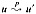
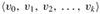
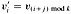

|
|
< Day Day Up > |
|
This section presents two kinds of graphs: directed and undirected. Certain definitions in the literature differ from those given here, but for the most part, the differences are slight. Section 22.1 shows how graphs can be represented in computer memory.
A directed graph (or digraph) G is a pair (V, E), where V is a finite set and E is a binary relation on V. The set V is called the vertex set of G, and its elements are called vertices (singular: vertex). The set E is called the edge set of G, and its elements are called edges. Figure B.2(a) is a pictorial representation of a directed graph on the vertex set {1, 2, 3, 4, 5, 6}. Vertices are represented by circles in the figure, and edges are represented by arrows. Note that self-loops-edges from a vertex to itself-are possible.
In an undirected graph G = (V, E), the edge set E consists of unordered pairs of vertices, rather than ordered pairs. That is, an edge is a set {u, v}, where u, v ∈ V and u ≠ v. By convention, we use the notation (u, v) for an edge, rather than the set notation {u, v}, and (u, v) and (v, u) are considered to be the same edge. In an undirected graph, self-loops are forbidden, and so every edge consists of exactly two distinct vertices. Figure B.2(b) is a pictorial representation of an undirected graph on the vertex set {1, 2, 3, 4, 5, 6}.
Many definitions for directed and undirected graphs are the same, although certain terms have slightly different meanings in the two contexts. If (u, v) is an edge in a directed graph G = (V, E), we say that (u, v) is incident from or leaves vertex u and is incident to or enters vertex v. For example, the edges leaving vertex 2 in Figure B.2(a) are (2, 2), (2, 4), and (2, 5). The edges entering vertex 2 are (1, 2) and (2, 2). If (u, v) is an edge in an undirected graph G = (V, E), we saythat (u, v) is incident on vertices u and v. In Figure B.2(b), the edges incident on vertex 2 are (1, 2) and (2, 5).
If (u, v) is an edge in a graph G = (V, E), we say that vertex v is adjacent to vertex u. When the graph is undirected, the adjacency relation is symmetric. When the graph is directed, the adjacency relation is not necessarily symmetric. If v is adjacent to u in a directed graph, we sometimes write u → v. In parts (a) and (b) of Figure B.2, vertex 2 is adjacent to vertex 1, since the edge (1, 2) belongs to both graphs. Vertex 1 is not adjacent to vertex 2 in Figure B.2(a), since the edge (2, 1) does not belong to the graph.
The degree of a vertex in an undirected graph is the number of edges incident on it. For example, vertex 2 in Figure B.2(b) has degree 2. A vertex whose degree is 0, such as vertex 4 in Figure B.2(b), is isolated. In a directed graph, the out-degree of a vertex is the number of edges leaving it, and the in-degree of a vertex is the number of edges entering it. The degree of a vertex in a directed graph is its in-degree plus its out-degree. Vertex 2 in Figure B.2(a) has in-degree 2, out-degree 3, and degree 5.
A path of length k from a vertex u to a vertex u' in a graph G = (V, E) is a sequence 〈v0, v1, v2,..., vk〉 of vertices such that u = v0, u' = vk, and (vi-1, vi) ∈ E for i = 1, 2,..., k. The length of the path is the number ofedges in the path. The path contains the vertices v0, v1,..., vk and the edges (v0, v1), (v1, v2),..., (vk-1, vk). (There is always a 0-length path from u to u.) If there is a path p from u to u', we say that u' is reachable from u via p, which we sometimes write as  if G is directed. A path is simple if all vertices in the path are distinct. In Figure B.2(a), the path 〈1, 2, 5, 4〉 is a simple path of length 3. The path 〈2, 5, 4, 5〉 is not simple.
A subpath of path p = 〈v0, v1,..., vk〉 is a contiguous subsequence of its vertices. That is, for any 0 ≤ i ≤ j ≤ k, the subsequence of vertices 〈vi, vi+1,..., vj〉 is a subpath of p.
In a directed graph, a path 〈v0, v1,..., vk〉 forms a cycle if v0 = vk and the path contains at least one edge. The cycle is simple if, in addition, v1, v2,..., vk are distinct. A self-loop is a cycle of length 1. Two paths 〈v0, v1, v2,..., vk-1, v0〉 and  form the same cycle if there exists an integer j such that  for i = 0, 1,..., k - 1. In Figure B.2(a), the path 〈1, 2, 4, 1〉 forms the same cycle as the paths 〈2, 4, 1, 2〉 and 〈4, 1, 2, 4〉. This cycle is simple, but the cycle 〈1, 2, 4, 5, 4, 1〉 is not. The cycle 〈2, 2〉 formed by the edge (2, 2) is a self-loop. A directed graph with no self-loops is simple. In an undirected graph, a path 〈v0, v1,..., vk〉 forms a (simple) cycle if k ≥ 3, v0 = vk, and v1, v2,..., vk are distinct. For example, in Figure B.2(b), the path 〈1, 2, 5, 1〉 is a cycle. A graph with no cycles is acyclic.
An undirected graph is connected if every pair of vertices is connected by a path. The connected components of a graph are the equivalence classes of vertices under the "is reachable from" relation. The graph in Figure B.2(b) has three connected components: {1, 2, 5}, {3, 6}, and {4}. Every vertex in {1, 2, 5} is reachable from every other vertex in {1, 2, 5}. An undirected graph is connected if it has exactly one connected component, that is, if every vertex is reachable from every other vertex.
A directed graph is strongly connected if every two vertices are reachable from each other. The strongly connected components of a directed graph are the equivalence classes of vertices under the "are mutually reachable" relation. A directed graph is strongly connected if it has only one strongly connected component. The graph in Figure B.2(a) has three strongly connected components: {1, 2, 4, 5}, {3}, and {6}. All pairs of vertices in {1, 2, 4, 5} are mutually reachable. The vertices {3, 6} do not form a strongly connected component, since vertex 6 cannot be reached from vertex 3.
Two graphs G = (V, E) and G' = (V', E') are isomorphic if there exists a bijection f : V → V' such that (u, v) ∈ E if and only if (f((u), f(v)) ∈ E'. In other words, we can relabel the vertices of G to be vertices of G', maintaining the corresponding edges in G and G' Figure B.3(a) shows a pair of isomorphic graphs G and G'with respective vertex sets V = {1, 2, 3, 4, 5, 6} and V' = {u, v, w, x, y, z}. The mapping from V to V' given by f(1) = u, f(2) = v, f(3) = w, f(4) = x, f(5) = y, f(6) = z is the required bijective function. The graphs in Figure B.3(b) are not isomorphic. Although both graphs have 5 vertices and 7 edges, the top graph has a vertex of degree 4 and the bottom graph does not.
We say that a graph G' = (V', E') is a subgraph of G = (V, E) if V' ⊆ V and E' ⊆ E. Given a set V' ⊆ V, the subgraph of G induced by V' is the graph G'= (V', E'), where
E' = {(u, v) ∈ E : u, v ∈ V'}.
The subgraph induced by the vertex set {1, 2, 3, 6} in Figure B.2(a) appears in Figure B.2(c) and has the edge set {(1, 2), (2, 2), (6, 3)}.
Given an undirected graph G = (V, E), the directed version of G is the directed graph G' = (V, E'), where (u, v) ∈ E' if and only if (u, v) ∈ E. That is, each undirected edge (u, v) in G is replaced in the directed version by the two directed edges (u, v) and (v, u). Given a directed graph G = (V, E), the undirected version of G is the undirected graph G'= (V, E'), where (u, v) ∈ E' if and only if u ≠ v and (u, v) ∈ E. That is, the undirected version contains the edges of G "with their directions removed" and with self-loops eliminated. (Since (u, v) and (v, u) are the same edge in an undirected graph, the undirected version of a directed graph contains it only once, even if the directed graph contains both edges (u, v) and (v, u).) In a directed graph G = (V, E), a neighbor of a vertex u is any vertex that is adjacent to u in the undirected version of G. That is, v is a neighbor of u if either (u, v) ∈ E or (v, u) ∈ E. In an undirected graph, u and v are neighbors if they are adjacent.
Several kinds of graphs are given special names. A complete graph is an undirected graph in which every pair of vertices is adjacent. A bipartite graph is an undirected graph G = (V, E) in which V can be partitioned into two sets V1 and V2 such that (u, v) ∈ E implies either u ∈ V1 and v ∈ V2 or u ∈ V2 and v ∈ V1. That is, all edges go between the two sets V1 and V2. An acyclic, undirected graph is a forest, and a connected, acyclic, undirected graph is a (free) tree (see Section B.5).We often take the first letters of "directed acyclic graph" and call such a graph a dag.
There are two variants of graphs that you may occasionally encounter. A multigraph is like an undirected graph, but it can have both multiple edges between vertices and self-loops. A hypergraph is like an undirected graph, but each hyperedge, rather than connecting two vertices, connects an arbitrary subset of vertices. Many algorithms written for ordinary directed and undirected graphs can be adapted to run on these graphlike structures.
The contraction of an undirected graph G = (V, E) by an edge e = (u, v) is a graph G' = (V', E'), where V' = V - {u, v} ∪ {x} and x is a new vertex. The set of edges E' is formed from E by deleting the edge (u, v) and, for each vertex w incident to u or v, deleting whichever of (u, w) and (v, w) is in E and adding the new edge (x, w).
Attendees of a faculty party shake hands to greet each other, and each professor remembers how many times he or she shook hands. At the end of the party, the department head adds up the number of times that each professor shook hands. Show that the result is even by proving the handshaking lemma: if G = (V, E) is an undirected graph, then
Show that if a directed or undirected graph contains a path between two vertices u and v, then it contains a simple path between u and v. Show that if a directed graph contains a cycle, then it contains a simple cycle.
Verify that in an undirected graph, the "is reachable from" relation is an equivalence relation on the vertices of the graph. Which of the three properties of an equivalence relation hold in general for the "is reachable from" relation on the vertices of a directed graph?
What is the undirected version of the directed graph in Figure B.2(a)? What is the directed version of the undirected graph in Figure B.2(b)?
Show that a hypergraph can be represented by a bipartite graph if we let incidence in the hypergraph correspond to adjacency in the bipartite graph. (Hint: Let one set of vertices in the bipartite graph correspond to vertices of the hypergraph, and let the other set of vertices of the bipartite graph correspond to hyperedges.)
|
|
< Day Day Up > |
|